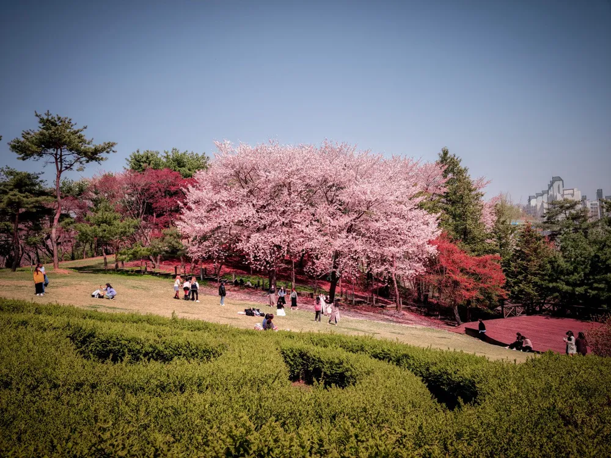

Step 1
탐험할 장소를 선택하세요

Place 01 · Cozy
니콜스관 4층 카페 하랑
넓은 창가에서 공부와 휴식을 함께할 수 있는 공간입니다. 수업 사이에 친구와 이야기하거나 넓은 책상에서 잠깐 과제하기 좋아 골랐습니다.
- 위치
- 성심교정 니콜스관(N관) 4층
- 추천 활동
- 창가에서 다음 수업 자료를 읽고 잠시 쉬기

Place 02 · Seasonal
하늘동산
벚꽃과 바람을 느끼며 천천히 걸을 수 있는 야외 공간입니다. 오래 화면을 본 뒤 이곳에 나오면 머리가 맑아지고 계절의 변화를 발견하게 됩니다.
- 위치
- 학생미래인재관과 마리아관 주변 야외 공간
- 추천 활동
- 휴대전화를 잠시 넣어 두고 10분 동안 천천히 걷기
Place 03 · Quiet
베리타스관 중앙도서관
시험과 과제를 준비하며 조용히 집중할 수 있는 장소입니다. 해야 할 일을 하나씩 정리하고 노력한 만큼 결과를 만들어 가는 곳이라 의미가 있습니다.
- 위치
- 성심교정 베리타스관(L관) 중앙도서관
- 추천 활동
- 다음 수업 전에 할 일 세 가지를 적고 한 가지 시작하기